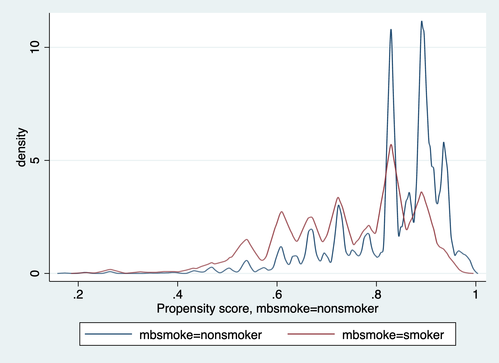
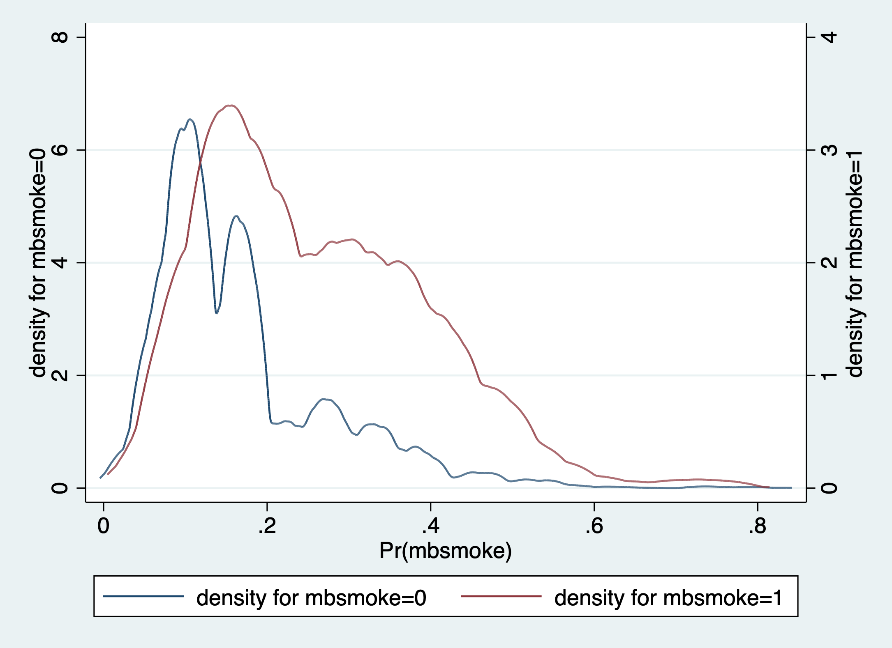

ICON-LSHTM, LONDON, 15th September 2020
Miguel Angel Luque Fernandez, PhD Assistant Professor of Epidemiology
Matthew J. Smith, MSc Research Degree Student in Biostatistics
Inequalities in Cancer Outcomes Network, LSHTM, London, UK
Copyright (c) 2017 Permission is hereby granted, free of charge, to any person obtaining a copy of this software and associated documentation files (the “Software”), to deal in the Software without restriction, including without limitation the rights to use, copy, modify, merge, publish, distribute, sublicense, and/or sell copies of the Software, and to permit persons to whom the Software is furnished to do so, subject to the following conditions: The above copyright notice and this permission notice shall be included in all copies or substantial portions of the Software.
THE SOFTWARE IS PROVIDED “AS IS”, WITHOUT WARRANTY OF ANY KIND, EXPRESS OR IMPLIED, INCLUDING BUT NOT LIMITED TO THE WARRANTIES OF MERCHANTABILITY, FITNESS FOR A PARTICULAR PURPOSE AND NON INFRINGEMENT. IN NO EVENT SHALL THE AUTHORS OR COPYRIGHT HOLDERS BE LIABLE FOR ANY CLAIM, DAMAGES OR OTHER LIABILITY, WHETHER IN AN ACTION OF CONTRACT, TORT OR OTHERWISE, ARISING FROM, OUT OF OR IN CONNECTION WITH THE SOFTWARE OR THE USE OR OTHER DEALINGS IN THE SOFTWARE.
Bug reports: miguel-angel.luque@lshtm.ac.uk
In this tutorial we make complex causal inference methodology easily understood and applied.
Assumptions: 1. Conditional exchageability 2. Positivity 3. Consistency
Our data is…
. clear
. set more off
. use "~/Dropbox/ESTIMATORSCIproject/R_Stata_master_files/Data/rhc.dta", clear
. describe
Contains data from ~/Dropbox/ESTIMATORSCIproject/R_Stata_master_files/Data/rhc.dta
obs: 5,735
vars: 83 11 Jan 2019 12:34
----------------------------------------------------------------------------------------------
storage display value
variable name type format label variable label
----------------------------------------------------------------------------------------------
patient int %8.0g
category byte %17.0g disease Disease category
cat2 str17 %17s
carcinoma byte %10.0g carcinoma
Carcinoma present
sadmdte int %8.0g
dschdte str8 %8s
dthdte str8 %8s
lstctdte int %8.0g
death byte %8.0g
cardiohx byte %8.0g
chfhx byte %8.0g
dementhx byte %8.0g
psychhx byte %8.0g
chrpulhx byte %8.0g
renalhx byte %8.0g
liverhx byte %8.0g
gibledhx byte %8.0g
malighx byte %8.0g
immunhx byte %8.0g
transhx byte %8.0g
amihx byte %8.0g
age float %9.0g
gender byte %8.0g gender Gender
edu float %9.0g Years education
surv2md1 float %9.0g
das2d3pc float %9.0g
survial_d30 byte %8.0g
death_d30 byte %8.0g
aps int %8.0g AP3 score
scoma1 byte %8.0g
meanbp1 float %9.0g
wblc1 float %9.0g
hrt1 int %8.0g
resp1 float %9.0g
temp1 float %9.0g
pafi1 float %9.0g
alb1 float %9.0g
hema1 float %9.0g
bili1 float %9.0g
crea1 float %9.0g
sod1 int %8.0g
pot1 float %9.0g
paco21 float %9.0g
ph1 float %9.0g
rhc byte %8.0g rhc RHC inserted
weight_kg float %9.0g
no_resus byte %8.0g resus Not for resuscitation
insurance_class byte %19.0g insure Insurance class
resp byte %8.0g
card byte %8.0g
neuro byte %8.0g
gastr byte %8.0g
renal byte %8.0g
meta byte %8.0g
hema byte %8.0g
seps byte %8.0g
trauma byte %8.0g
ortho byte %8.0g
adld3p str2 %2s
urin1 str9 %9s
race byte %8.0g race Race
income byte %10.0g income Income: US$
ptid int %8.0g
inc_2 byte %8.0g income==2
inc_3 byte %8.0g income==3
inc_4 byte %8.0g income==4
dis_2 byte %8.0g category==2
dis_3 byte %8.0g category==3
dis_4 byte %8.0g category==4
dis_5 byte %8.0g category==5
dis_6 byte %8.0g category==6
dis_7 byte %8.0g category==7
dis_8 byte %8.0g category==8
dis_9 byte %8.0g category==9
ca_1 byte %8.0g carcinoma==1
ca_2 byte %8.0g carcinoma==2
race1 byte %8.0g race==1
race2 byte %8.0g race==2
insur_1 byte %8.0g insurance_class==1
insure_2 byte %8.0g insurance_class==2
insur_3 byte %8.0g insurance_class==3
insur_4 byte %8.0g insurance_class==4
insur_5 byte %8.0g insurance_class==5
----------------------------------------------------------------------------------------------
Sorted by:
. count
5,735
. set seed 1234
We now define the outcome, exposure (or treatment), the main confounder, and other confounders
. global Y death_d30 // Outcome
. global A rhc // Exposure or treatment
. global C gender // Confounder
. global W gender age edu race carcinoma // Confounders
A naive approach to assessing the main association can be performed using the regress command.
. regress $Y $A $C // Naive approach
Source | SS df MS Number of obs = 5,735
-------------+---------------------------------- F(2, 5732) = 16.59
Model | 7.34472157 2 3.67236078 Prob > F = 0.0000
Residual | 1269.20384 5,732 .221424257 R-squared = 0.0058
-------------+---------------------------------- Adj R-squared = 0.0054
Total | 1276.54856 5,734 .222627932 Root MSE = .47056
------------------------------------------------------------------------------
death_d30 | Coef. Std. Err. t P>|t| [95% Conf. Interval]
-------------+----------------------------------------------------------------
rhc | .0735173 .0128091 5.74 0.000 .0484066 .0986281
gender | .0027453 .0125204 0.22 0.826 -.0217993 .02729
_cons | .3049128 .0103874 29.35 0.000 .2845496 .325276
------------------------------------------------------------------------------
We can naively say there is strong evidence (p<0.001) that the risk of death within 30 days is 7% higher amongst those with RHC, adjusting for gender.
Before jumping straight into the black box of Stata’s teffects command, we first estimate the Average Treatment Effect (ATE) by hand.
The G-Formula is defined as
$$ E(Y^{a,c}) = \sum_{C} E(Y|A=a,C=c)P(C=c) $$
From the G-Formula, we estimate four possible combinations:
$ E(Y^{0,0}) $
$ E(Y^{0,1}) $
$ E(Y^{1,0}) $
$ E(Y^{1,1}) $
For example (and in terms of our data), $ E(Y^{0,0}) $ is obtained by summing the expected deaths amongst those without RHC and are female (weighted by the marginal probability of being female) and the expected deaths amongst those without RHC and are male (weighted by the marginal probability of being male). In terms of the G-Formula, this potential outcome is
$$ E(Y^{0,0}) = E(Y|A_{1}=0,C_{1}=0)P(C_{1}=0) + E(Y|A_{1}=0,C_{1}=1)P(C_{1}=1) $$
and, by the same process, the remaining combinations can be obtained:
$ E(Y^{0,1}) = E(Y|A_{1}=0,C_{1}=1)P(C_{1}=1) + E(Y|A_{1}=1,C_{1}=1)P(C_{1}=1) $
$ E(Y^{1,0}) = E(Y|A_{1}=1,C_{1}=0)P(C_{1}=0) + E(Y|A_{1}=0,C_{1}=0)P(C_{1}=0) $
$ E(Y^{1,1}) = E(Y|A_{1}=1,C_{1}=1)P(C_{1}=1) + E(Y|A_{1}=1,C_{1}=0)P(C_{1}=0) $
If the identifying assumptions hold, the potential outcomes can be estimated and the difference (i.e. $ Y^{a=1} - Y^{a=0} $ ) can be given a causal interpretation.
To do this, first compute the marginal probability for confounder C (i.e. marginal probability of being married)
. proportion $C
Proportion estimation Number of obs = 5,735
--------------------------------------------------------------
| Logit
| Proportion Std. Err. [95% Conf. Interval]
-------------+------------------------------------------------
gender |
Female | .4434176 .00656 .4305982 .4563128
Male | .5565824 .00656 .5436872 .5694018
--------------------------------------------------------------
. matrix m=e(b)
. gen genderf = m[1,1]
. sum genderf
Variable | Obs Mean Std. Dev. Min Max
-------------+---------------------------------------------------------
genderf | 5,735 .4434176 0 .4434176 .4434176
. gen genderm = m[1,2]
. sum genderm
Variable | Obs Mean Std. Dev. Min Max
-------------+---------------------------------------------------------
genderm | 5,735 .5565824 0 .5565824 .5565824
We see that, in this sample, the marginal probability of being male $ (C=1) $ is roughly 56%, thus 44% are female $ (C=0) $.
Now we compute the G-Formula by hand (generalisation or standardisation)
. ssc install sumup
checking sumup consistency and verifying not already installed...
all files already exist and are up to date.
. sumup $Y, by($A $C)
rhc gender | Obs Missing Mean Std. Dev. Min Max
--------------+------------------------------------------------------------------
No Female | 1637 0 .301772 .459167 0 1
No Male | 1914 0 .310345 .462756 0 1
Yes Female | 906 0 .384106 .486652 0 1
Yes Male | 1278 0 .377152 .484863 0 1
--------------+------------------------------------------------------------------
Total | 5735 0 .334438 .471835 0 1
---------------------------------------------------------------------------------
. matrix y00 = r(Stat1)
. matrix y01 = r(Stat2)
. matrix y10 = r(Stat3)
. matrix y11 = r(Stat4)
. gen ATE = ((y11[3,1]-y01[3,1]))*genderm + ((y10[3,1]-y00[3,1]))*genderf
. qui: sum ATE
. display "The ATE is: " "`r(mean)'"
The ATE is: .0736921206116676
. drop ATE
In the code above we have estimated the four possible combinations:
$ E(Y^{0,0}) = y00 = 0.301772 $
$ E(Y^{0,1}) = y01 = 0.310345 $
$ E(Y^{1,0}) = y10 = 0.384106 $
$ E(Y^{1,1}) = y11 = 0.377152 $
We are now ready to estimate the average treatment effect of RHC on death within 30 days.
Plugging the combinations into the formula for the average treatment effect
$$ ATE = [E(Y|A=1,C=1)-E(Y|A=0,C=1)]P(C=1) + [E(Y|A=1,C=0)-E(Y|A=0,C=0)]P(C=0) $$
we obtain $ ATE = 0.07369 $
Our naive regression analysis estimate (0.07352 grams) is a slight underestimate of the ATE.
Fortunately, Stata contains a command that calculates the ATE for us. Stata implements the results using the teffects command. We obtain the same value of the ATE from our by-hand approach.
. teffects ra ($Y $C) ($A)
Iteration 0: EE criterion = 1.911e-33
Iteration 1: EE criterion = 1.911e-33 (backed up)
Treatment-effects estimation Number of obs = 5,735
Estimator : regression adjustment
Outcome model : linear
Treatment model: none
------------------------------------------------------------------------------
| Robust
death_d30 | Coef. Std. Err. z P>|z| [95% Conf. Interval]
-------------+----------------------------------------------------------------
ATE |
rhc |
(Yes vs No) | .0736921 .0129708 5.68 0.000 .0482699 .0991143
-------------+----------------------------------------------------------------
POmean |
rhc |
No | .3065433 .0077429 39.59 0.000 .2913675 .321719
------------------------------------------------------------------------------
We have calculated the ATE amongst those who had RHC or not, but often it is of public health interest to ask “what is the effect of having RHC for those who chose to do so?” In other words, we are interested in the average treatment effect amongst the treated (ATET), that is amongst only those who had RHC. This comes with a slightly weaker assumption of conditional exchangeability such that the potential outcome for the expected deaths amongst those who (possibly contrary to fact) did not have RHC is independent of the exposure given the confounder.
We can check the ATET, first by hand
. proportion $C if $A==1
Proportion estimation Number of obs = 2,184
--------------------------------------------------------------
| Logit
| Proportion Std. Err. [95% Conf. Interval]
-------------+------------------------------------------------
gender |
Female | .4148352 .0105427 .3943216 .4356483
Male | .5851648 .0105427 .5643517 .6056784
--------------------------------------------------------------
. matrix m=e(b)
. gen genderfatet = m[1,1]
. gen gendermatet = m[1,2]
. gen ATT = ((y11[3,1]-y01[3,1]))*gendermatet + ((y10[3,1]-y00[3,1]))*genderfatet
. qui: sum ATT
. display "The ATT is: " "`r(mean)'"
The ATT is: .0732483044266701
. drop ATT
We obtain $ ATET = 0.07325 $
We can check the Stata implementation results using the teffects command. We obtain the same value of the ATET from our by-hand approach
. teffects ra ($Y $C) ($A), atet
Iteration 0: EE criterion = 1.641e-33
Iteration 1: EE criterion = 1.353e-33
Treatment-effects estimation Number of obs = 5,735
Estimator : regression adjustment
Outcome model : linear
Treatment model: none
------------------------------------------------------------------------------
| Robust
death_d30 | Coef. Std. Err. z P>|z| [95% Conf. Interval]
-------------+----------------------------------------------------------------
ATET |
rhc |
(Yes vs No) | .0732483 .0129747 5.65 0.000 .0478185 .0986782
-------------+----------------------------------------------------------------
POmean |
rhc |
No | .3067883 .0077749 39.46 0.000 .2915498 .3220268
------------------------------------------------------------------------------
again, we obtain $ ATET = 0.07325 $.
Let’s now bootstrap the confidence intervals for the ATE
. program define ATE, rclass
1. capture drop y1
2. capture drop y0
3. capture drop ATE
4. sumup $Y, by($A $C)
5. matrix y00 = r(Stat1)
6. matrix y01 = r(Stat2)
7. matrix y10 = r(Stat3)
8. matrix y11 = r(Stat4)
9. gen ATE = ((y11[3,1]-y01[3,1]))*genderm + ((y10[3,1]-y00[3,1]))*genderf
10. qui sum ATE
11. return scalar ate = `r(mean)'
12. end
. qui bootstrap r(ate), reps(1000): ATE
. estat boot, all
Bootstrap results Number of obs = 5,735
Replications = 1000
command: ATE
_bs_1: r(ate)
------------------------------------------------------------------------------
| Observed Bootstrap
| Coef. Bias Std. Err. [95% Conf. Interval]
-------------+----------------------------------------------------------------
_bs_1 | .07369212 -.0005405 .01318366 .0478526 .0995316 (N)
| .0473988 .0983584 (P)
| .0490597 .100722 (BC)
------------------------------------------------------------------------------
(N) normal confidence interval
(P) percentile confidence interval
(BC) bias-corrected confidence interval
. program drop ATE
. drop ATE
Let’s now bootstrap the confidence intervals for the ATET
. program define ATT, rclass
1. capture drop y1
2. capture drop y0
3. capture drop ATT
4. sumup $Y, by($A $C)
5. matrix y00 = r(Stat1)
6. matrix y01 = r(Stat2)
7. matrix y10 = r(Stat3)
8. matrix y11 = r(Stat4)
9. gen ATT = ((y11[3,1]-y01[3,1]))*gendermatet + ((y10[3,1]-y00[3,1]))*genderfatet
10. qui sum ATT
11. return scalar atet = `r(mean)'
12. end
. qui bootstrap r(atet), reps(1000): ATT
. estat boot, all
Bootstrap results Number of obs = 5,735
Replications = 1000
command: ATT
_bs_1: r(atet)
------------------------------------------------------------------------------
| Observed Bootstrap
| Coef. Bias Std. Err. [95% Conf. Interval]
-------------+----------------------------------------------------------------
_bs_1 | .0732483 .0003011 .01320444 .0473681 .0991285 (N)
| .0471343 .1000492 (P)
| .0469963 .1000166 (BC)
------------------------------------------------------------------------------
(N) normal confidence interval
(P) percentile confidence interval
(BC) bias-corrected confidence interval
. program drop ATT
. drop ATT
. regress $Y ibn.$A ibn.$A#c.($C) , noconstant vce(robust)
Linear regression Number of obs = 5,735
F(4, 5731) = 726.42
Prob > F = 0.0000
R-squared = 0.3383
Root MSE = .47058
------------------------------------------------------------------------------
| Robust
death_d30 | Coef. Std. Err. t P>|t| [95% Conf. Interval]
-------------+----------------------------------------------------------------
rhc |
No | .3017715 .0113492 26.59 0.000 .2795228 .3240202
Yes | .384106 .0161646 23.76 0.000 .3524172 .4157948
|
rhc#c.gender |
No | .0085733 .0155147 0.55 0.581 -.0218414 .038988
Yes | -.0069542 .0211005 -0.33 0.742 -.0483192 .0344109
------------------------------------------------------------------------------
. margins $A , vce(unconditional) // Marginal probability for C
Predictive margins Number of obs = 5,735
Expression : Linear prediction, predict()
------------------------------------------------------------------------------
| Unconditional
| Margin Std. Err. t P>|t| [95% Conf. Interval]
-------------+----------------------------------------------------------------
rhc |
No | .3065433 .0077456 39.58 0.000 .291359 .3217275
Yes | .3802354 .0104095 36.53 0.000 .3598287 .400642
------------------------------------------------------------------------------
. margins r.$A , contrast(nowald)
Contrasts of predictive margins Number of obs = 5,735
Model VCE : Robust
Expression : Linear prediction, predict()
--------------------------------------------------------------
| Delta-method
| Contrast Std. Err. [95% Conf. Interval]
-------------+------------------------------------------------
rhc |
(Yes vs No) | .0736921 .0129749 .0482565 .0991278
--------------------------------------------------------------
Note about margins Unconditional
. regress $Y ibn.$A ibn.$A#c.($C), noconstant vce(robust) coeflegend
Linear regression Number of obs = 5,735
F(4, 5731) = 726.42
Prob > F = 0.0000
R-squared = 0.3383
Root MSE = .47058
------------------------------------------------------------------------------
death_d30 | Coef. Legend
-------------+----------------------------------------------------------------
rhc |
No | .3017715 _b[0bn.rhc]
Yes | .384106 _b[1.rhc]
|
rhc#c.gender |
No | .0085733 _b[0bn.rhc#c.gender]
Yes | -.0069542 _b[1.rhc#c.gender]
------------------------------------------------------------------------------
. predictnl ATE = (_b[1bn.rhc] + _b[1bn.rhc#c.gender]*gender) - (_b[0bn.rhc] + _b[0bn.rhc#c.ge
> nder]*gender)
. qui: sum ATE
. display "The ATE is: " "`r(mean)'"
The ATE is: .0736921199166266
. drop ATE
. teffects ra ($Y $C) ($A) //Parametric G-Formula implementation in Stata
Iteration 0: EE criterion = 1.911e-33
Iteration 1: EE criterion = 1.911e-33 (backed up)
Treatment-effects estimation Number of obs = 5,735
Estimator : regression adjustment
Outcome model : linear
Treatment model: none
------------------------------------------------------------------------------
| Robust
death_d30 | Coef. Std. Err. z P>|z| [95% Conf. Interval]
-------------+----------------------------------------------------------------
ATE |
rhc |
(Yes vs No) | .0736921 .0129708 5.68 0.000 .0482699 .0991143
-------------+----------------------------------------------------------------
POmean |
rhc |
No | .3065433 .0077429 39.59 0.000 .2913675 .321719
------------------------------------------------------------------------------
. regress $Y $C if $A==1
Source | SS df MS Number of obs = 2,184
-------------+---------------------------------- F(1, 2182) = 0.11
Model | .025638691 1 .025638691 Prob > F = 0.7416
Residual | 514.543958 2,182 .235812997 R-squared = 0.0000
-------------+---------------------------------- Adj R-squared = -0.0004
Total | 514.569597 2,183 .235716719 Root MSE = .48561
------------------------------------------------------------------------------
death_d30 | Coef. Std. Err. t P>|t| [95% Conf. Interval]
-------------+----------------------------------------------------------------
gender | -.0069542 .0210902 -0.33 0.742 -.0483131 .0344048
_cons | .384106 .0161332 23.81 0.000 .352468 .4157439
------------------------------------------------------------------------------
. predict double y1hat
(option xb assumed; fitted values)
. regress $Y $C if $A==0
Source | SS df MS Number of obs = 3,551
-------------+---------------------------------- F(1, 3549) = 0.31
Model | .064853796 1 .064853796 Prob > F = 0.5808
Residual | 754.580035 3,549 .212617649 R-squared = 0.0001
-------------+---------------------------------- Adj R-squared = -0.0002
Total | 754.644889 3,550 .212576025 Root MSE = .4611
------------------------------------------------------------------------------
death_d30 | Coef. Std. Err. t P>|t| [95% Conf. Interval]
-------------+----------------------------------------------------------------
gender | .0085733 .0155231 0.55 0.581 -.0218619 .0390085
_cons | .3017715 .0113966 26.48 0.000 .279427 .3241161
------------------------------------------------------------------------------
. predict double y0hat
(option xb assumed; fitted values)
. mean y1hat y0hat
Mean estimation Number of obs = 5,735
--------------------------------------------------------------
| Mean Std. Err. [95% Conf. Interval]
-------------+------------------------------------------------
y1hat | .3802354 .0000456 .380146 .3803248
y0hat | .3065433 .0000562 .306433 .3066535
--------------------------------------------------------------
. nlcom _b[y1hat] - _b[y0hat]
_nl_1: _b[y1hat] - _b[y0hat]
------------------------------------------------------------------------------
Mean | Coef. Std. Err. z P>|z| [95% Conf. Interval]
-------------+----------------------------------------------------------------
_nl_1 | .0736921 .0001019 723.40 0.000 .0734925 .0738918
------------------------------------------------------------------------------
Bootstrapping to get the SE and 95%CI for the ATE
. capture program drop ATE
. program define ATE, rclass
1. capture drop y1
2. capture drop y0
3. reg $Y $C if $A==1
4. predict double y1, xb
5. quiet sum y1
6. reg $Y $C if $A==0
7. predict double y0, xb
8. quiet sum y0
9. mean y1 y0
10. lincom _b[y1]-_b[y0]
11. return scalar ace =`r(estimate)'
12. end
. qui bootstrap r(ace), reps(1000): ATE
. estat boot, all
Bootstrap results Number of obs = 5,735
Replications = 1000
command: ATE
_bs_1: r(ace)
------------------------------------------------------------------------------
| Observed Bootstrap
| Coef. Bias Std. Err. [95% Conf. Interval]
-------------+----------------------------------------------------------------
_bs_1 | .07369212 -.0000257 .013397 .0474345 .0999498 (N)
| .0467011 .1006192 (P)
| .0473443 .1022617 (BC)
------------------------------------------------------------------------------
(N) normal confidence interval
(P) percentile confidence interval
(BC) bias-corrected confidence interval
Implement ATE
. teffects ra ($Y $W) ($A)
Iteration 0: EE criterion = 7.409e-32
Iteration 1: EE criterion = 1.603e-33
Treatment-effects estimation Number of obs = 5,735
Estimator : regression adjustment
Outcome model : linear
Treatment model: none
------------------------------------------------------------------------------
| Robust
death_d30 | Coef. Std. Err. z P>|z| [95% Conf. Interval]
-------------+----------------------------------------------------------------
ATE |
rhc |
(Yes vs No) | .0832815 .0128879 6.46 0.000 .0580217 .1085413
-------------+----------------------------------------------------------------
POmean |
rhc |
No | .3036417 .007676 39.56 0.000 .2885969 .3186864
------------------------------------------------------------------------------
Perform non-parametric G-Formula with multiple variables
. regress $Y ibn.$A ibn.$A#c.($W) , noconstant vce(robust)
Linear regression Number of obs = 5,735
F(12, 5723) = 251.78
Prob > F = 0.0000
R-squared = 0.3555
Root MSE = .46475
---------------------------------------------------------------------------------
| Robust
death_d30 | Coef. Std. Err. t P>|t| [95% Conf. Interval]
----------------+----------------------------------------------------------------
rhc |
No | .0748646 .04502 1.66 0.096 -.0133916 .1631208
Yes | .248333 .0659546 3.77 0.000 .119037 .3776289
|
rhc#c.gender |
No | .0173496 .0153525 1.13 0.258 -.0127472 .0474463
Yes | -.0080452 .0209464 -0.38 0.701 -.0491082 .0330177
|
rhc#c.age |
No | .002562 .000449 5.71 0.000 .0016819 .0034421
Yes | .0033168 .0006866 4.83 0.000 .0019708 .0046629
|
rhc#c.edu |
No | .0019492 .0025097 0.78 0.437 -.0029708 .0068691
Yes | -.0074977 .0033075 -2.27 0.023 -.0139816 -.0010138
|
rhc#c.race |
No | .0336423 .0138684 2.43 0.015 .0064551 .0608295
Yes | .0036924 .0184503 0.20 0.841 -.0324771 .039862
|
rhc#c.carcinoma |
No | .0973994 .0135972 7.16 0.000 .0707437 .1240551
Yes | .0857167 .0190314 4.50 0.000 .0484079 .1230254
---------------------------------------------------------------------------------
. margins $A, vce(unconditional)
Predictive margins Number of obs = 5,735
Expression : Linear prediction, predict()
------------------------------------------------------------------------------
| Unconditional
| Margin Std. Err. t P>|t| [95% Conf. Interval]
-------------+----------------------------------------------------------------
rhc |
No | .3036417 .0076841 39.52 0.000 .288578 .3187053
Yes | .3869232 .0104489 37.03 0.000 .3664394 .4074069
------------------------------------------------------------------------------
. margins r.$A, contrast(nowald)
Contrasts of predictive margins Number of obs = 5,735
Model VCE : Robust
Expression : Linear prediction, predict()
--------------------------------------------------------------
| Delta-method
| Contrast Std. Err. [95% Conf. Interval]
-------------+------------------------------------------------
rhc |
(Yes vs No) | .0832815 .0128901 .0580121 .1085509
--------------------------------------------------------------
G-Computation or parametric G-Formula computation
. regress $Y $W if $A==1
Source | SS df MS Number of obs = 2,184
-------------+---------------------------------- F(5, 2178) = 11.30
Model | 13.0154875 5 2.60309751 Prob > F = 0.0000
Residual | 501.55411 2,178 .23028196 R-squared = 0.0253
-------------+---------------------------------- Adj R-squared = 0.0231
Total | 514.569597 2,183 .235716719 Root MSE = .47988
------------------------------------------------------------------------------
death_d30 | Coef. Std. Err. t P>|t| [95% Conf. Interval]
-------------+----------------------------------------------------------------
gender | -.0080452 .0208889 -0.39 0.700 -.0490095 .032919
age | .0033168 .0006874 4.83 0.000 .0019689 .0046648
edu | -.0074977 .0033388 -2.25 0.025 -.0140453 -.0009502
race | .0036924 .0184662 0.20 0.842 -.0325207 .0399056
carcinoma | .0857167 .0185691 4.62 0.000 .0493016 .1221317
_cons | .248333 .0659673 3.76 0.000 .1189675 .3776984
------------------------------------------------------------------------------
. predict double y1hat
(option xb assumed; fitted values)
. regress $Y $W if $A==0
Source | SS df MS Number of obs = 3,551
-------------+---------------------------------- F(5, 3545) = 19.36
Model | 20.0625411 5 4.01250821 Prob > F = 0.0000
Residual | 734.582348 3,545 .207216459 R-squared = 0.0266
-------------+---------------------------------- Adj R-squared = 0.0252
Total | 754.644889 3,550 .212576025 Root MSE = .45521
------------------------------------------------------------------------------
death_d30 | Coef. Std. Err. t P>|t| [95% Conf. Interval]
-------------+----------------------------------------------------------------
gender | .0173496 .0153809 1.13 0.259 -.0128068 .0475059
age | .002562 .0004571 5.61 0.000 .0016659 .0034581
edu | .0019492 .0024773 0.79 0.431 -.0029079 .0068062
race | .0336423 .0137348 2.45 0.014 .0067134 .0605712
carcinoma | .0973994 .0126723 7.69 0.000 .0725537 .122245
_cons | .0748646 .0458773 1.63 0.103 -.015084 .1648131
------------------------------------------------------------------------------
. predict double y0hat
(option xb assumed; fitted values)
. mean y1hat y0hat
Mean estimation Number of obs = 5,735
--------------------------------------------------------------
| Mean Std. Err. [95% Conf. Interval]
-------------+------------------------------------------------
y1hat | .3869232 .0010709 .3848238 .3890225
y0hat | .3036417 .0009619 .301756 .3055273
--------------------------------------------------------------
. lincom _b[y1hat] - _b[y0hat]
( 1) y1hat - y0hat = 0
------------------------------------------------------------------------------
Mean | Coef. Std. Err. t P>|t| [95% Conf. Interval]
-------------+----------------------------------------------------------------
(1) | .0832815 .0005402 154.17 0.000 .0822225 .0843405
------------------------------------------------------------------------------
Bootstrap the 95% confidence intervals for the ATE
. capture program drop ATE
. program define ATE, rclass
1. capture drop y1
2. capture drop y0
3. reg $Y $W if $A==1
4. predict double y1, xb
5. quiet sum y1
6. reg $Y $W if $A==0
7. predict double y0, xb
8. quiet sum y0
9. mean y1 y0
10. lincom _b[y1]-_b[y0]
11. return scalar ace =`r(estimate)'
12. end
. qui bootstrap r(ace), reps(1000): ATE dots
. estat boot, all
Bootstrap results Number of obs = 5,735
Replications = 1000
command: ATE dots
_bs_1: r(ace)
------------------------------------------------------------------------------
| Observed Bootstrap
| Coef. Bias Std. Err. [95% Conf. Interval]
-------------+----------------------------------------------------------------
_bs_1 | .08328151 -.0000973 .01299773 .0578064 .1087566 (N)
| .0578251 .1083503 (P)
| .0577309 .1082517 (BC)
------------------------------------------------------------------------------
(N) normal confidence interval
(P) percentile confidence interval
(BC) bias-corrected confidence interval
Possibilities of G-Computation in Stata
Potential outcomes…
. teffects ra ($Y $W) ($A), aequations
Iteration 0: EE criterion = 7.409e-32
Iteration 1: EE criterion = 1.603e-33
Treatment-effects estimation Number of obs = 5,735
Estimator : regression adjustment
Outcome model : linear
Treatment model: none
------------------------------------------------------------------------------
| Robust
death_d30 | Coef. Std. Err. z P>|z| [95% Conf. Interval]
-------------+----------------------------------------------------------------
ATE |
rhc |
(Yes vs No) | .0832815 .0128879 6.46 0.000 .0580217 .1085413
-------------+----------------------------------------------------------------
POmean |
rhc |
No | .3036417 .007676 39.56 0.000 .2885969 .3186864
-------------+----------------------------------------------------------------
OME0 |
gender | .0173496 .0153365 1.13 0.258 -.0127093 .0474085
age | .002562 .0004485 5.71 0.000 .001683 .003441
edu | .0019492 .0025071 0.78 0.437 -.0029646 .0068629
race | .0336423 .0138538 2.43 0.015 .0064893 .0607953
carcinoma | .0973994 .013583 7.17 0.000 .0707772 .1240216
_cons | .0748646 .0449729 1.66 0.096 -.0132806 .1630098
-------------+----------------------------------------------------------------
OME1 |
gender | -.0080452 .0209245 -0.38 0.701 -.0490565 .0329661
age | .0033168 .0006859 4.84 0.000 .0019725 .0046612
edu | -.0074977 .003304 -2.27 0.023 -.0139735 -.001022
race | .0036924 .018431 0.20 0.841 -.0324316 .0398164
carcinoma | .0857167 .0190115 4.51 0.000 .0484549 .1229784
_cons | .248333 .0658855 3.77 0.000 .1191997 .3774662
------------------------------------------------------------------------------
Relative risk
. teffects ra ($Y $W) ($A), coeflegend
Iteration 0: EE criterion = 7.409e-32
Iteration 1: EE criterion = 1.603e-33
Treatment-effects estimation Number of obs = 5,735
Estimator : regression adjustment
Outcome model : linear
Treatment model: none
------------------------------------------------------------------------------
death_d30 | Coef. Legend
-------------+----------------------------------------------------------------
ATE |
rhc |
(Yes vs No) | .0832815 _b[ATE:r1vs0.rhc]
-------------+----------------------------------------------------------------
POmean |
rhc |
No | .3036417 _b[POmean:0.rhc]
------------------------------------------------------------------------------
???
. nlcom 100*_b[ATE:r1vs0.$A]/_b[POmean:0.$A]
_nl_1: 100*_b[ATE:r1vs0.rhc]/_b[POmean:0.rhc]
------------------------------------------------------------------------------
death_d30 | Coef. Std. Err. z P>|z| [95% Conf. Interval]
-------------+----------------------------------------------------------------
_nl_1 | 27.42756 4.684968 5.85 0.000 18.2452 36.60993
------------------------------------------------------------------------------
. teffects ipw ($Y) ($A $W, logit), nolog vsquish
Treatment-effects estimation Number of obs = 5,735
Estimator : inverse-probability weights
Outcome model : weighted mean
Treatment model: logit
------------------------------------------------------------------------------
| Robust
death_d30 | Coef. Std. Err. z P>|z| [95% Conf. Interval]
-------------+----------------------------------------------------------------
ATE |
rhc |
(Yes vs No) | .0830239 .0128836 6.44 0.000 .0577725 .1082753
-------------+----------------------------------------------------------------
POmean |
rhc |
No | .303559 .007674 39.56 0.000 .2885182 .3185997
------------------------------------------------------------------------------
Model for the propensity score (note here the possibility of potential misspecification)
. logit $A $W, vce(robust) nolog
Logistic regression Number of obs = 5,735
Wald chi2(5) = 40.92
Prob > chi2 = 0.0000
Log pseudolikelihood = -3789.7674 Pseudo R2 = 0.0055
------------------------------------------------------------------------------
| Robust
rhc | Coef. Std. Err. z P>|z| [95% Conf. Interval]
-------------+----------------------------------------------------------------
gender | .1836581 .0552148 3.33 0.001 .0754391 .2918771
age | -.0024152 .001642 -1.47 0.141 -.0056335 .000803
edu | .0300606 .0088848 3.38 0.001 .0126468 .0474744
race | -.0062316 .0491564 -0.13 0.899 -.1025764 .0901132
carcinoma | -.1897782 .0482913 -3.93 0.000 -.2844274 -.0951291
_cons | -.7356652 .1649039 -4.46 0.000 -1.058871 -.4124595
------------------------------------------------------------------------------
. predict double ps
(option pr assumed; Pr(rhc))
Sampling weights based on Horvitz-Thompson estimator
. generate double ipw1 = ($A==1)/ps
. regress $Y [pw=ipw1]
(sum of wgt is 5,735.68608829735)
Linear regression Number of obs = 2,184
F(0, 2183) = 0.00
Prob > F = .
R-squared = 0.0000
Root MSE = .48708
------------------------------------------------------------------------------
| Robust
death_d30 | Coef. Std. Err. t P>|t| [95% Conf. Interval]
-------------+----------------------------------------------------------------
_cons | .3865828 .0105233 36.74 0.000 .3659461 .4072196
------------------------------------------------------------------------------
. generate double ipw0 = ($A==0)/(1-ps)
. regress $Y [pw=ipw0]
(sum of wgt is 5,734.80747739061)
Linear regression Number of obs = 3,551
F(0, 3550) = 0.00
Prob > F = .
R-squared = 0.0000
Root MSE = .45986
------------------------------------------------------------------------------
| Robust
death_d30 | Coef. Std. Err. t P>|t| [95% Conf. Interval]
-------------+----------------------------------------------------------------
_cons | .303559 .0077143 39.35 0.000 .288434 .318684
------------------------------------------------------------------------------
Bootstrap the SE and 95%CI for the ATE
. program drop ATE
. program define ATE, rclass
1. capture drop y1
2. capture drop y0
3. regress $Y [pw=ipw1]
4. matrix y1 = e(b)
5. gen double y1 = y1[1,1]
6. regress $Y [pw=ipw0]
7. matrix y0 = e(b)
8. gen double y0 = y0[1,1]
9. mean y1 y0
10. lincom _b[y1]-_b[y0]
11. return scalar ace = `r(estimate)'
12. end
. qui bootstrap r(ace), reps(1000): ATE
. estat boot, all
Bootstrap results Number of obs = 5,735
Replications = 1000
command: ATE
_bs_1: r(ace)
------------------------------------------------------------------------------
| Observed Bootstrap
| Coef. Bias Std. Err. [95% Conf. Interval]
-------------+----------------------------------------------------------------
_bs_1 | .08302387 -.0001348 .01292366 .057694 .1083538 (N)
| .057046 .1089079 (P)
| .057115 .109042 (BC)
------------------------------------------------------------------------------
(N) normal confidence interval
(P) percentile confidence interval
(BC) bias-corrected confidence interval
Test the balance after adjustment
. qui teffects ipw ($Y) ($A $W)
. tebalance summarize
Covariate balance summary
Raw Weighted
-----------------------------------------
Number of obs = 5,735 5,735.0
Treated obs = 2,184 2,867.7
Control obs = 3,551 2,867.3
-----------------------------------------
-----------------------------------------------------------------
|Standardized differences Variance ratio
| Raw Weighted Raw Weighted
----------------+------------------------------------------------
gender | .0931272 .0004124 .9771047 .9999057
age | -.0613524 -.0038196 .8174922 .7899075
edu | .0913642 -.0025822 1.014723 1.025038
race | -.0022396 .0023428 1.029587 1.025423
carcinoma | -.1051837 .0012232 .8386081 1.022651
-----------------------------------------------------------------
Check for any violations from the positivity assumption by using overlap plots
. qui: teffects ipw ($Y) ($A $W, logit), nolog vsquish
. teffects overlap

Check the overlap plots by hand
. sort $A
. by $A: summarize ps
----------------------------------------------------------------------------------------------
-> rhc = No
Variable | Obs Mean Std. Dev. Min Max
-------------+---------------------------------------------------------
ps | 3,551 .3780561 .0414948 .2348917 .5064684
----------------------------------------------------------------------------------------------
-> rhc = Yes
Variable | Obs Mean Std. Dev. Min Max
-------------+---------------------------------------------------------
ps | 2,184 .3853126 .0406452 .2215339 .5108013
. kdensity ps if $A==1, generate(x1pointsa d1A) nograph n(10000)
(n() set to 5735)
. kdensity ps if $A==0, generate(x0pointsa d0A) nograph n(10000)
(n() set to 5735)
. label variable d1A "density for RHC=1"
. label variable d0A "density for RHC=0"
. twoway (line d0A x0pointsa , yaxis(1))(line d1A x1pointsa, yaxis(2))

. teffects ipwra ($Y $W) ($A $W)
Iteration 0: EE criterion = 8.365e-19
Iteration 1: EE criterion = 1.987e-34
Treatment-effects estimation Number of obs = 5,735
Estimator : IPW regression adjustment
Outcome model : linear
Treatment model: logit
------------------------------------------------------------------------------
| Robust
death_d30 | Coef. Std. Err. z P>|z| [95% Conf. Interval]
-------------+----------------------------------------------------------------
ATE |
rhc |
(Yes vs No) | .0831351 .0128849 6.45 0.000 .0578811 .1083891
-------------+----------------------------------------------------------------
POmean |
rhc |
No | .3036164 .0076748 39.56 0.000 .2885741 .3186587
------------------------------------------------------------------------------
. nlcom 100*_b[r1vs0.$A]/_b[POmean:0.$A]
_nl_1: 100*_b[r1vs0.rhc]/_b[POmean:0.rhc]
------------------------------------------------------------------------------
death_d30 | Coef. Std. Err. z P>|z| [95% Conf. Interval]
-------------+----------------------------------------------------------------
_nl_1 | 27.38162 4.683555 5.85 0.000 18.20202 36.56121
------------------------------------------------------------------------------
Step one (inverse probability weights):
. logit $A $W
Iteration 0: log likelihood = -3810.7005
Iteration 1: log likelihood = -3789.7849
Iteration 2: log likelihood = -3789.7674
Iteration 3: log likelihood = -3789.7674
Logistic regression Number of obs = 5,735
LR chi2(5) = 41.87
Prob > chi2 = 0.0000
Log likelihood = -3789.7674 Pseudo R2 = 0.0055
------------------------------------------------------------------------------
rhc | Coef. Std. Err. z P>|z| [95% Conf. Interval]
-------------+----------------------------------------------------------------
gender | .1836581 .0551834 3.33 0.001 .0755006 .2918156
age | -.0024152 .0016903 -1.43 0.153 -.0057282 .0008977
edu | .0300606 .0088646 3.39 0.001 .0126863 .0474349
race | -.0062316 .0489981 -0.13 0.899 -.1022661 .0898029
carcinoma | -.1897782 .0480047 -3.95 0.000 -.2838656 -.0956908
_cons | -.7356652 .1673983 -4.39 0.000 -1.06376 -.4075705
------------------------------------------------------------------------------
. predict double dps, pr
. gen ipw = .
(5,735 missing values generated)
. replace ipw=($A==1)/dps if $A==1
(2,184 real changes made)
. replace ipw=($A==0)/(1-dps) if $A==0
(3,551 real changes made)
. sum ipw
Variable | Obs Mean Std. Dev. Min Max
-------------+---------------------------------------------------------
ipw | 5,735 2.000086 .5309787 1.307005 4.513983
Stabilised weights
. logit $A, vce(robust) nolog
Logistic regression Number of obs = 5,735
Wald chi2(0) = .
Prob > chi2 = .
Log pseudolikelihood = -3810.7005 Pseudo R2 = 0.0000
------------------------------------------------------------------------------
| Robust
rhc | Coef. Std. Err. z P>|z| [95% Conf. Interval]
-------------+----------------------------------------------------------------
_cons | -.4860712 .0271959 -17.87 0.000 -.5393741 -.4327683
------------------------------------------------------------------------------
. predict double nps, pr
. gen sws = .
(5,735 missing values generated)
. replace sws = nps/dps if $A==1
(2,184 real changes made)
. replace sws = (1-nps)/(1-dps) if $A==0
(3,551 real changes made)
. sum sws
Variable | Obs Mean Std. Dev. Min Max
-------------+---------------------------------------------------------
sws | 5,735 1.000025 .0872206 .7455336 1.719013
Step two (G-Computation):
. reg $Y $W if $A==1 [pw=sws]
(sum of wgt is 2,184.26127511263)
Linear regression Number of obs = 2,184
F(5, 2178) = 11.24
Prob > F = 0.0000
R-squared = 0.0257
Root MSE = .48132
------------------------------------------------------------------------------
| Robust
death_d30 | Coef. Std. Err. t P>|t| [95% Conf. Interval]
-------------+----------------------------------------------------------------
gender | -.0047265 .021157 -0.22 0.823 -.0462166 .0367636
age | .0033663 .0006945 4.85 0.000 .0020044 .0047283
edu | -.0074849 .0033859 -2.21 0.027 -.0141249 -.000845
race | .0023162 .018733 0.12 0.902 -.0344202 .0390526
carcinoma | .0818435 .0191421 4.28 0.000 .0443048 .1193823
_cons | .2446931 .0670155 3.65 0.000 .113272 .3761141
------------------------------------------------------------------------------
. drop y1
. predict double y1, xb
. reg $Y $W if $A==0 [pw=sws]
(sum of wgt is 3,550.88079333305)
Linear regression Number of obs = 3,551
F(5, 3545) = 19.62
Prob > F = 0.0000
R-squared = 0.0264
Root MSE = .45408
------------------------------------------------------------------------------
| Robust
death_d30 | Coef. Std. Err. t P>|t| [95% Conf. Interval]
-------------+----------------------------------------------------------------
gender | .0181191 .0152925 1.18 0.236 -.011864 .0481021
age | .0026018 .000446 5.83 0.000 .0017274 .0034763
edu | .0019874 .0025178 0.79 0.430 -.0029491 .0069239
race | .0325739 .0137979 2.36 0.018 .0055212 .0596266
carcinoma | .0982906 .0136131 7.22 0.000 .0716003 .1249809
_cons | .0715539 .0450667 1.59 0.112 -.0168054 .1599132
------------------------------------------------------------------------------
. drop y0
. predict double y0, xb
. mean y1 y0
Mean estimation Number of obs = 5,735
--------------------------------------------------------------
| Mean Std. Err. [95% Conf. Interval]
-------------+------------------------------------------------
y1 | .3867515 .00106 .3846734 .3888295
y0 | .3036164 .0009719 .3017111 .3055216
--------------------------------------------------------------
IPWRA (Problem SE) we need bootstrap
. nlcom(_b[y1]-_b[y0])
_nl_1: _b[y1]-_b[y0]
------------------------------------------------------------------------------
Mean | Coef. Std. Err. z P>|z| [95% Conf. Interval]
-------------+----------------------------------------------------------------
_nl_1 | .0831351 .0005468 152.05 0.000 .0820635 .0842067
------------------------------------------------------------------------------
Bootstrap SE and 95% CI for the ATE (Stabilized weights)
. capture program drop ACE
. program define ACE, rclass
1. capture drop y1
2. capture drop y0
3. reg $Y $W if $A==1 [pw=sws]
4. predict double y1, xb
5. quiet sum y1
6. return scalar y1=`r(mean)'
7. reg $Y $W if $A==0 [pw=sws]
8. predict double y0, xb
9. quiet sum y0
10. return scalar y0=`r(mean)'
11. mean y1 y0
12. lincom _b[y1]-_b[y0]
13. return scalar ace =`r(estimate)'
14. end
. qui bootstrap r(ace), reps(1000): ACE
. estat boot, all
Bootstrap results Number of obs = 5,735
Replications = 1000
command: ACE
_bs_1: r(ace)
------------------------------------------------------------------------------
| Observed Bootstrap
| Coef. Bias Std. Err. [95% Conf. Interval]
-------------+----------------------------------------------------------------
_bs_1 | .08313507 -.0001235 .01313107 .0573986 .1088715 (N)
| .0577564 .1092037 (P)
| .0575552 .1087117 (BC)
------------------------------------------------------------------------------
(N) normal confidence interval
(P) percentile confidence interval
(BC) bias-corrected confidence interval
Check that we get the same outcome as we did with our approach by hand
. teffects ipwra ($Y $W) ($A $W, logit)
Iteration 0: EE criterion = 8.365e-19
Iteration 1: EE criterion = 1.987e-34
Treatment-effects estimation Number of obs = 5,735
Estimator : IPW regression adjustment
Outcome model : linear
Treatment model: logit
------------------------------------------------------------------------------
| Robust
death_d30 | Coef. Std. Err. z P>|z| [95% Conf. Interval]
-------------+----------------------------------------------------------------
ATE |
rhc |
(Yes vs No) | .0831351 .0128849 6.45 0.000 .0578811 .1083891
-------------+----------------------------------------------------------------
POmean |
rhc |
No | .3036164 .0076748 39.56 0.000 .2885741 .3186587
------------------------------------------------------------------------------
. teffects aipw ($Y $W) ($A $W, logit)
Iteration 0: EE criterion = 8.365e-19
Iteration 1: EE criterion = 1.032e-33
Treatment-effects estimation Number of obs = 5,735
Estimator : augmented IPW
Outcome model : linear by ML
Treatment model: logit
------------------------------------------------------------------------------
| Robust
death_d30 | Coef. Std. Err. z P>|z| [95% Conf. Interval]
-------------+----------------------------------------------------------------
ATE |
rhc |
(Yes vs No) | .0831263 .0128851 6.45 0.000 .0578719 .1083808
-------------+----------------------------------------------------------------
POmean |
rhc |
No | .3036141 .0076748 39.56 0.000 .2885719 .3186564
------------------------------------------------------------------------------
. nlcom 100*_b[r1vs0.$A]/_b[POmean:0.$A]
_nl_1: 100*_b[r1vs0.rhc]/_b[POmean:0.rhc]
------------------------------------------------------------------------------
death_d30 | Coef. Std. Err. z P>|z| [95% Conf. Interval]
-------------+----------------------------------------------------------------
_nl_1 | 27.37894 4.683609 5.85 0.000 18.19924 36.55864
------------------------------------------------------------------------------
Define the global variables
. qui sum $Y
. gen double Y = ($Y -`r(min)')/(`r(max)' - `r(min)')
. qui sum $Y
. global cf = (`r(max)' - `r(min)')
Step 1: prediction model for the outcome Q0 (g-computation)
. qui glm Y $A $W, fam(bin)
. predict double QAW, xb
. qui glm Y $W if $A==1, fam(bin)
. predict double Q1W, mu
. qui glm Y $W if $A==0, fam(bin)
. predict double Q0W, mu
Step 2: prediction model for the treatment g0 (IPTW): Inverse probability weights (Stabilized weights)
. qui logit $A $W
. drop dps
. predict double dps, pr
. qui logit $A
. drop nps
. predict double nps, pr
. drop sws
. gen sws = .
(5,735 missing values generated)
. replace sws = nps/dps if $A==1
(2,184 real changes made)
. replace sws = (1-nps)/(1-dps) if $A==0
(3,551 real changes made)
. sum sws
Variable | Obs Mean Std. Dev. Min Max
-------------+---------------------------------------------------------
sws | 5,735 1.000025 .0872206 .7455336 1.719013
Step 3: Estimation Equation
. gen double ATE = (sws*(Y-QAW) + (Q1W - Q0W)*$cf)
. sum ATE
Variable | Obs Mean Std. Dev. Min Max
-------------+---------------------------------------------------------
ATE | 5,735 1.128739 .5628816 -.7455166 2.987568
Marginal Structural Model
. glm $Y $A [pw=sws],nolog
Generalized linear models Number of obs = 5,735
Optimization : ML Residual df = 5,733
Scale parameter = .2212913
Deviance = 1268.663159 (1/df) Deviance = .2212913
Pearson = 1268.663159 (1/df) Pearson = .2212913
Variance function: V(u) = 1 [Gaussian]
Link function : g(u) = u [Identity]
AIC = 1.329959
Log pseudolikelihood = -3811.656456 BIC = -48346.69
------------------------------------------------------------------------------
| Robust
death_d30 | Coef. Std. Err. z P>|z| [95% Conf. Interval]
-------------+----------------------------------------------------------------
rhc | .0830239 .0130466 6.36 0.000 .057453 .1085947
_cons | .303559 .0077139 39.35 0.000 .2884399 .318678
------------------------------------------------------------------------------
Bootstrap the 95% confidence intervals for the AIPTW
. drop ATE
. capture program drop ATE
. program define ATE, rclass
1. capture drop ATE
2. gen double ATE = (sws*(Y-QAW) + (Q1W - Q0W)*$cf) // Estimation Equation
3. mean ATE
4. lincom _b[ATE]
5. return scalar ate =`r(estimate)'
6. end
. qui bootstrap r(ate), reps(1000): ATE
. estat boot, all
Bootstrap results Number of obs = 5,735
Replications = 1000
command: ATE
_bs_1: r(ate)
------------------------------------------------------------------------------
| Observed Bootstrap
| Coef. Bias Std. Err. [95% Conf. Interval]
-------------+----------------------------------------------------------------
_bs_1 | 1.1287394 .0002388 .00758062 1.113882 1.143597 (N)
| 1.114775 1.144063 (P)
| 1.113436 1.143198 (BC)
------------------------------------------------------------------------------
(N) normal confidence interval
(P) percentile confidence interval
(BC) bias-corrected confidence interval
. eltmle $Y $A $W, tmle // install via 'help eltmle'
C:\Users\lsh1601639\Dropbox\ESTIMATORSCIproject\ESTIMATORSCI\Dyndoc
. shell "C:\Program Files\R\R-4.0.1\bin\x64\R.exe" CMD BATCH SLS.R
.
end of do-file
Variable | Obs Mean Std. Dev. Min Max
-------------+---------------------------------------------------------
POM1 | 5,735 .3866675 .0786047 .206382 .6544437
POM0 | 5,735 .3032265 .0728112 .1452486 .5750107
ps | 5,735 .3808195 .0446575 .2425472 .5604938
--------------------------------
TMLE: Average Treatment Effect
--------------------------------
ATE: | 0.0834
SE: | 0.0129
P-value: | 0.0000
95%CI: | 0.0582, 0.1087
--------------------------------
-----------------------------
TMLE: Causal Risk Ratio (CRR)
-----------------------------
CRR: 1.28; 95%CI:(1.19, 1.37)
-----------------------------
-------------------------------
TMLE: Marginal Odds Ratio (MOR)
-------------------------------
MOR: 1.45; 95%CI:(1.29, 1.61)
-------------------------------
. shell "C:\Program Files\R\R-3.6.3\bin\x64\R.exe" CMD BATCH SLS.R
Let’s generate some data…
Variables are defined as: w1=Socieconomic status, w2=Age, w3=Cancer stage, w4=Comorbidities
Note: the interaction between age and comorbidities
. clear
. set obs 1000
number of observations (_N) was 0, now 1,000
. set seed 777
. gen w1 = round(runiform(1, 5)) //Quintiles of Socioeconomic Deprivation
. gen w2 = rbinomial(1, 0.45) //Binary: probability age >65 = 0.45
. gen w3 = round(runiform(0, 1) + 0.75*(w2) + 0.8*(w1)) //Stage
. recode w3 (5/6=1) //Stage (TNM): categorical 4 levels
(w3: 128 changes made)
. gen w4 = round(runiform(0, 1) + 0.75*(w2) + 0.2*(w1)) //Comorbidites: categorical four le
> vels
. gen A = (rbinomial(1,invlogit(-1 - 0.15*(w4) + 1.5*(w2) + 0.75*(w3) + 0.25*(w1) + 0.8*(
> w2)*(w4)))) //Binary treatment
. gen Y = (rbinomial(1,invlogit(-3 + A + 0.25*(w4) + 0.75*(w3) + 0.8*(w2)*(w4) + 0.05*(w1)
> ))) //Binary outcome
. gen Yt1 = (invlogit(-3 + 1 + 0.25*(w4) + 0.75*(w3) + 0.8*(w2)*(w4) + 0.05*(w1))) // Potentia
> l outcome 1
. gen Yt0 = (invlogit(-3 + 0 + 0.25*(w4) + 0.75*(w3) + 0.8*(w2)*(w4) + 0.05*(w1))) // Potentia
> l outcome 2
. gen psi = Yt1-Yt0 // True ATE
Estimate the true simulated ATE (ATE = 17.8%)
. mean psi
Mean estimation Number of obs = 1,000
--------------------------------------------------------------
| Mean Std. Err. [95% Conf. Interval]
-------------+------------------------------------------------
psi | .1787412 .0020142 .1747886 .1826938
--------------------------------------------------------------
Regression adjustment ATE = 24.1%
. teffects ra (Y w1 w2 w3 w4) (A)
Iteration 0: EE criterion = 8.701e-32
Iteration 1: EE criterion = 1.434e-32
Treatment-effects estimation Number of obs = 1,000
Estimator : regression adjustment
Outcome model : linear
Treatment model: none
------------------------------------------------------------------------------
| Robust
Y | Coef. Std. Err. z P>|z| [95% Conf. Interval]
-------------+----------------------------------------------------------------
ATE |
A |
(1 vs 0) | .2410504 .1148066 2.10 0.036 .0160336 .4660672
-------------+----------------------------------------------------------------
POmean |
A |
0 | .4739475 .1141366 4.15 0.000 .2502439 .697651
------------------------------------------------------------------------------
. estimates store ra
Inverse probability weighting ATE = 37.9%
(Note: we will also store the estimates so that we can compare between models)
. teffects ipw (Y) (A w1 w2 w3 w4)
Iteration 0: EE criterion = 3.522e-23
Iteration 1: EE criterion = 2.529e-33
Treatment-effects estimation Number of obs = 1,000
Estimator : inverse-probability weights
Outcome model : weighted mean
Treatment model: logit
------------------------------------------------------------------------------
| Robust
Y | Coef. Std. Err. z P>|z| [95% Conf. Interval]
-------------+----------------------------------------------------------------
ATE |
A |
(1 vs 0) | .378604 .0807516 4.69 0.000 .2203337 .5368743
-------------+----------------------------------------------------------------
POmean |
A |
0 | .3362695 .079327 4.24 0.000 .1807913 .4917476
------------------------------------------------------------------------------
. estimates store ipw
IPTW-RA ATE = 31.9%
(Note: we will also store the estimates so that we can compare between models)
. teffects ipwra (Y w1 w2 w3 w4) (A w1 w2 w3 w4)
Iteration 0: EE criterion = 3.522e-23
Iteration 1: EE criterion = 4.596e-33
Treatment-effects estimation Number of obs = 1,000
Estimator : IPW regression adjustment
Outcome model : linear
Treatment model: logit
------------------------------------------------------------------------------
| Robust
Y | Coef. Std. Err. z P>|z| [95% Conf. Interval]
-------------+----------------------------------------------------------------
ATE |
A |
(1 vs 0) | .3188398 .0706036 4.52 0.000 .1804593 .4572202
-------------+----------------------------------------------------------------
POmean |
A |
0 | .3958477 .0691749 5.72 0.000 .2602674 .5314281
------------------------------------------------------------------------------
. estimates store ipwra
AIPTW ATE = 28.8%
(Note: we will also store the estimates so that we can compare between models)
. teffects aipw (Y w1 w2 w3 w4) (A w1 w2 w3 w4)
Iteration 0: EE criterion = 3.522e-23
Iteration 1: EE criterion = 3.283e-33
Treatment-effects estimation Number of obs = 1,000
Estimator : augmented IPW
Outcome model : linear by ML
Treatment model: logit
------------------------------------------------------------------------------
| Robust
Y | Coef. Std. Err. z P>|z| [95% Conf. Interval]
-------------+----------------------------------------------------------------
ATE |
A |
(1 vs 0) | .285314 .1152551 2.48 0.013 .0594183 .5112098
-------------+----------------------------------------------------------------
POmean |
A |
0 | .4293636 .1144905 3.75 0.000 .2049664 .6537608
------------------------------------------------------------------------------
. estimates store aipw
. qui reg psi
. estimates store psi
. estout psi ra ipw ipwra aipw
-----------------------------------------------------------------------------
psi ra ipw ipwra aipw
b b b b b
-----------------------------------------------------------------------------
main
r1vs0.A .2410504 .378604 .3188398 .285314
_cons .1787412
-----------------------------------------------------------------------------
POmean
0.A .4739475 .3362695 .3958477 .4293636
-----------------------------------------------------------------------------
OME0
w1 .0395478 .1119125 .0395478
w2 .1770299 -.098543 .1770299
w3 .1715455 .0389883 .1715455
w4 .1019039 .2425232 .1019039
_cons -.3331923 -.3427923 -.3331923
-----------------------------------------------------------------------------
OME1
w1 .0100658 .0071447 .0100658
w2 .1529128 .1510302 .1529128
w3 .0867786 .0859272 .0867786
w4 .1157346 .1193923 .1157346
_cons .2148979 .2211646 .2148979
-----------------------------------------------------------------------------
TME1
w1 .200913 .200913 .200913
w2 3.383105 3.383105 3.383105
w3 .6876172 .6876172 .6876172
w4 -.1261434 -.1261434 -.1261434
_cons -.85242 -.85242 -.85242
-----------------------------------------------------------------------------
Ensemble Learning Maximum Likelihood Estimation (ELTMLE) ATE = 22.1%
. eltmle Y A w1 w2 w3 w4, tmle
C:\Users\lsh1601639\Dropbox\ESTIMATORSCIproject\ESTIMATORSCI\Dyndoc
. shell "C:\Program Files\R\R-4.0.1\bin\x64\R.exe" CMD BATCH SLS.R
.
end of do-file
Variable | Obs Mean Std. Dev. Min Max
-------------+---------------------------------------------------------
POM1 | 1,000 .7097874 .1894903 .1976774 .9726699
POM0 | 1,000 .4459877 .2304127 .0500353 .9061237
ps | 1,000 .86845 .1383139 .4885203 .975
--------------------------------
TMLE: Average Treatment Effect
--------------------------------
ATE: | 0.2638
SE: | 0.0555
P-value: | 0.0000
95%CI: | 0.1550, 0.3726
--------------------------------
-----------------------------
TMLE: Causal Risk Ratio (CRR)
-----------------------------
CRR: 1.59; 95%CI:(1.25, 2.03)
-----------------------------
-------------------------------
TMLE: Marginal Odds Ratio (MOR)
-------------------------------
MOR: 3.06; 95%CI:(1.69, 4.43)
-------------------------------
. shell "C:\Program Files\R\R-3.6.3\bin\x64\R.exe" CMD BATCH SLS.R
Relative bias IPTW ( = 0.52631579)
. display (0.38 - 0.18)/.38
.52631579
Relative bias AIPTW ( = 0.35714286)
. display (0.28 - 0.18)/0.28
.35714286
Relative bias ELTMLE ( = 0.18181818)
. display (0.22 - 0.18)/0.22
.18181818
dyndoc StataCode.do, replace